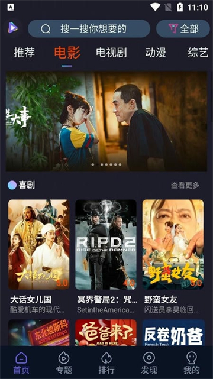

给爸妈的电视装个直播 App：51TV 上手几天说点实在的
家里的智能电视自带的直播要么要会员要么频道不全，翻了一圈选了 51TV，用了一周下来聊聊安装、操作和几个实用小功能的真实体验。
开头：为什么我会装这个
事情的起因很简单——我爸某天跟我说，家里那台小米电视自带的直播频道越来越少，想看个央视五套的球赛老是跳出来"该内容需会员"。我一开始想，随便找个直播 App 装上不就完了？结果翻了几个应用商店才发现，现在正经能在电视上用的直播工具其实没那么多了。
搜索过程中撞见过一堆带"51TV"字样的东西——什么 51tv.com 网站、51TV吧、还有个刷机固件站也沾边，差点搞混。最后确认下来，正经做安卓 TV 直播的是优度宽带那一款，公司 2010 年就做了，不是那种今天上线明天跑路的小作坊。抱着试试看的心态，我去51TV官网，从下载拿了安装包。
安装：泰捷盒子最简单，其他盒子各有各的麻烦
说安装是因为家里两台盒子情况不一样。我自己用的泰捷盒子 WEBOX 30S 最省心——系统默认就开放侧装，插个 U 盘进去弹一下本地浏览器，找到 APK 点确认就完事，前后不到半分钟。另一台是老款的小米盒子，折腾了好一会儿才找到那个藏得很深的"允许未知来源"开关，中间还被小米自带的安全中心拦了一次，说什么"该应用可能危害设备"，我跟它对峙了大概十秒钟才放行。
装完之后图标就在首页应用列表里，跟系统自带的 App 摆在一起没什么违和感。这点还挺让人安心的——至少不会装完就被系统偷偷清掉。
界面和基本操作：遥控器方向键够用了
打开之后首页的布局很传统，上方是频道分类导航，下面是推荐位。说实话第一次进去有点懵，频道列表挺长的，央视、卫视、地方台加起来百八十个台，第一反应是"这么多怎么找"。好在遥控器右键能直接弹出 EPG 节目单，每个频道当前播什么、接下来播什么一目了然。
实际用下来最常用的操作也就那几个：下键切频道、右键进节目单、菜单键呼出更多选项。中老年人上手基本没难度——我爸用了两天就自己找到CCTV 五套看球赛了，虽然他还是分不清"体育频道"和"体育赛事频道"有什么区别。
首页的推荐位做得中规中矩，会根据最近看的内容推一些相关节目。我连续看了两天的纪录片，第三天首页就给我推了好几个同类型的，算是有点诚意，不是那种完全随机的排列。

两个我觉得挺实用的小功能
用了一周下来，有两个功能是真的让我觉得"有点意思"的，不是那种写在功能列表里但永远用不上的噱头。
第一个是节目预约。我平时上班忙，晚上想看的节目经常会忘。51TV 里在 EPG 节目单上选中一个还没开播的节目，按一下菜单键就能预约，开播前五分钟会在屏幕右上角弹个小气泡提醒你。后来发现手机版也能预约，而且两端同步——我在公司用手机约了球赛，回家打开盒子也能收到提醒。有次我在厨房做饭，差点忘了那场欧冠，要不是盒子弹了个提醒，说不定就错过了。这个功能对于作息不太规律的人来说真的救星。
第二个是观看历史。说实话我一开始以为这功能跟所有视频 App 一样，就是个记录列表，直到有天我发现我妈在盒子上看过的连续剧，回我自己手机上打开 51TV，历史记录里也能看到。后来才搞明白，登录同一个账号之后历史是跨设备同步的。而且可以按日期分组，想找上周看过的东西不用一页页翻。还有个细节让我挺在意的——历史记录里不存具体的操作细节，比如我在某个频道上切了清晰度或者换了线路，这些都不会被记下来，只记"看过这个频道"。对在意隐私的人来说这点做得不错。
历史记录可以单条删也可以一键清空，如果哪天你不想让家里人看到你看过什么（嗯，你懂的），设置里找到"清除观看历史"就能搞定。不过默认不会自动过期，想让记录保持干净记得定期清一下——这些操作细节我是后来去51TV文档里翻到的。

画质和稳定性：够用，但别吹毛求疵
画质方面说实话我没抱太高预期——毕竟是免费直播，而且直播源的质量本来就参差不齐。央视和主流卫视的画质大多在 720p 到 1080p 之间，看球赛和连续剧完全够用。某些地方台或者小众频道的画质会差一些，偶尔遇到过画面卡顿、声音不同步的情况，换一下线路通常能解决。
稳定性方面，泰捷盒子上一周没崩过一次，小米盒子上有过一次闪退——不知道是盒子本身的问题还是 App 适配的问题。整体来说属于"能用、够用"的水平，没有惊艳但也不至于让人想卸载。
适合谁，不适合谁
我觉得 51TV 比较适合这几类人：家里有老人需要一个简单的电视直播替代品的；想找一个"装完就能用、不要会员"的基础直播工具的；手里同时有盒子和手机、希望历史和预约能跨设备同步的。
如果你追求极致画质、想主动线路切换、或者需要一些很冷门的海外频道，那它可能不是最佳选择。功能上它确实是偏基础款的，没有花里胡哨的东西，主打一个"装上就能看电视"。
一些我没料到的小细节
安装时没发现，后来翻看资料才注意到它的开发公司是上海优度宽带，2010 年就注册了，做宽带流媒体好多年了。还有隐私政策里明确写了不主动向第三方共享个人数据，用户可以申请删除个人记录——这些点对于一个免费 App 来说，算是做得比较规范的。
另外就是搜索时会碰到好几个名字里带"51TV"的东西，容易混淆。本页聊的这个是安卓 TV 盒子上的直播 App，那个 51tv.com 是 PC 端的老网站，51TV吧是第三方导航站，还有个刷机固件站跟它没关系。选购的时候别走错门。
最后说一句
如果只是给家里电视找个能看直播的工具，不想折腾会员、不想跟各种广告弹窗斗智斗勇，51TV 值得试试。它不是什么黑科技也没有什么革命性的功能，但就是那种"装上之后你会忘了它的存在"的 App——该有的都有，不该有的一个没多。整理的资料也分别同步在了GitHub、Gitee和GitCode，国内访问哪个顺手用哪个。